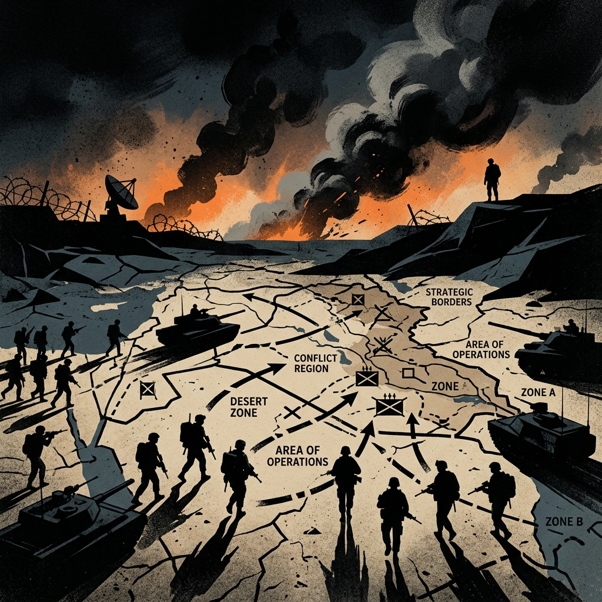

Post
On War
The illusion of quick victory and the ongoing cycle of regional conflict


The U.S. has been at war for more than 20 of the past 25 years in three major conflicts all in the same region. First, Afghanistan, then Iraq, now Iran.
Each of these campaign cycles began with promises of rapid resolution, technological superiority, and clear objectives. Yet each revealed the persistent gap between military firepower and durable political outcomes. From the initial fall of Kabul in 2001 to the "Shock and Awe" invasion of Baghdad in 2003, initial tactical swiftness routinely masked the complex, long-term entanglements that followed.
The Clausewitzian Trap
In his classic 1832 treatise Vom Kriege (On War), Prussian general Carl von Clausewitz famously postulated that war is "the continuation of politics by other means." Crucially, Clausewitz emphasized that military force is not an end in itself, but an instrument designed to achieve specific political objectives. When military interventions take place without clear, achievable political endstates, tactical victories inevitably disintegrate into prolonged attrition.
Clausewitz also introduced the concept of friction—the accumulation of unforeseen obstacles, human errors, unpredictable conditions, and local resistance that separates theoretical planning from real-world warfare. In modern warfare, high-precision munitions and real-time surveillance have not eliminated friction; they have merely shifted it into political, social, and informational spheres.
No one starts a war—or rather, no one in his senses ought to do so—without first being clear in his mind what he intends to achieve by the war and how he intends to conduct it.
The Cycle of Regional Escalation
A defining characteristic of these three conflicts is their interconnected nature. The invasion of Afghanistan in 2001 set the precedent for post-9/11 military doctrine. The 2003 invasion of Iraq dismantled the regional balance of power between Baghdad and Tehran, unexpectedly expanding Iranian influence across the Levant and Persian Gulf. Decades later, ongoing clashes, drone strikes, and proxy warfare involving Iran represent the culmination of a single, continuous quarter-century arc of conflict in the Middle East.
Rather than ending wars, technological advancement has frequently transformed their format. As open conventional combat gives way to asymmetric engagements, drone warfare, cyber operations, and maritime interdictions, the threshold for entering and sustaining conflict has lowered even as the path to resolution becomes more obscured.
The Human and Strategic Toll
The cumulative footprint of these quarter-century operations extends far beyond military victory declarations:
- Human Cost: Over 900,000 direct deaths from war violence across post-9/11 war zones, including hundreds of thousands of civilians.
- Financial Expenditure: An estimated $8+ trillion expended by the U.S. government on post-9/11 military operations and long-term veteran care.
- Regional Displacement: Over 38 million people displaced by post-9/11 conflicts in Afghanistan, Iraq, Pakistan, Yemen, and Syria.
Beyond the Horizon
Recognizing the limits of military force is not an argument for isolationism; rather, it is a call for strategic realism. As history demonstrates, starting a conflict is far easier than controlling its trajectory or engineering its conclusion. Until military decisions are firmly anchored to realistic political goals and diplomatic engagement, the cycle of perpetual involvement will continue to repeat.